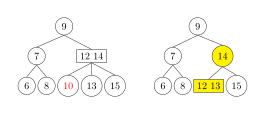
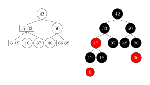

2-3 树
本页面介绍 2-3 树。2-3 树是一种多路搜索树，是绝对平衡的树，其所有叶节点都处于同一层级上。2-3 树是 3 阶 B 树。
定义
2-3 树中的每一个节点都有两个孩子（称为 2 节点，2-node）或三个孩子（称为 3 节点，3-node)。
-
2 节点，有一个数据元素和两个孩子。只能有两个孩子或没有孩子，不能出现只有一个孩子的情况。如果 2 节点有孩子，左子树包含的元素小于
，右子树包含的元素大于 。 -
3 节点，有两个数据元素和三个孩子。只能有三个孩子或没有孩子，不能出现有一个孩子或有两个孩子的情况。如果 3 节点有孩子，左子树包含小于较小元素的元素，右子树包含大于较大元素的元素，中间子树包含介于两元素之间的元素。
-
4 节点，有三个数据元素。只会在操作树时暂时创建，而不会永久存储在树上。
2-3 树的叶节点不含有子节点，有一个或两个数据元素。
树
是空树。 是一个 2 节点，并带有元素 。如果 有左孩子 和右孩子 ，则： 和 是相同高度的 2-3 树。 大于 中的每个元素。 小于 中的每个数据元素。
是一个 3 节点，并带有数据元素 和 ，其中 小于 。如果 有左孩子 ，中间孩子 和右孩子 ，则： 、 和 是相等高度的 2-3 树。 大于 中的每个数据元素且小于 中的每个数据元素。 大于 中的每个数据元素且小于 中的每个数据元素。
性质
- 所有内部节点都是 2 节点或 3 节点。
- 所有叶节点都在同一层级上。
- 树上的所有数据都是按顺序保存的（多路搜索树的性质）。
操作
查找
由于 2-3 树上的元素是按一定顺序存储的，所以 2-3 树的查找与二叉搜索树类似。下面在树
- 如果 2–3 树
为空，那么 肯定不在 中，查找结束。 - 假设
是 的根节点。 - 如果
是一个叶子节点： - 如果
不在节点 中，那么 肯定不在整个树 中，查找结束。 - 如果
在节点 中，那么 在树 中，查找成功结束。
- 如果
- 假设
是一个 "2 节点"，具有左子节点 和右子节点 ， 是节点 中的数据元素。有以下三种情况： - 如果
等于 ，那么找到 在树 中，查找成功结束。 - 如果
小于 ，将 设为子树 ，并回到步骤 2 继续查找。 - 如果
大于 ，将 设为子树 ，并回到步骤 2 继续查找。
- 如果
- 假设
是一个 "3 节点"，具有左子节点 、中间子节点 和右子节点 ， 和 是节点 中的两个数据元素，满足 。有以下四种情况： - 如果
等于 或 ，那么找到 在树 中，查找成功结束。 - 如果
小于 ，将 设为子树 ，回到步骤 2 继续查找。 - 如果
在 和 之间，将 设为子树 ，回到步骤 2 继续查找。 - 如果
大于 ，将 设为子树 ，回到步骤 2 继续查找。
- 如果
插入
插入节点需要维持树的平衡。
对于空树，直接插入一个 2 节点即可。此外，为了保持完美平衡性，向 2-3 树添加元素不会直接添加到空节点，而是先进行搜索，将待插入元素添加到最后搜索到的叶子节点，与它融合。
-
如果插入 2 节点，则融合形成 3 节点。如下图插入元素 4。
-
如果插入 3 节点，则先融合形成 4 节点，再拆解形成 2 个 2 节点。
-
如果父节点为 2 节点，则中间元素上移与父节点融合形成 3 节点。如下图插入元素 10。

-
如果父节点为 3 节点，则重复步骤 2。如下图插入元素 1。
-
通过上述深度增加的例子，可以看出 2-3 树和标准二叉树不同，标准的二叉树的的深度是由上到下的增加的，而 2-3 树的深度是由下至上的增加的。
删除
删除节点需要维持树的平衡。2-3 树的删除可以分为三种情况。
- 待删除元素位于一个 3 节点的叶子节点上。只需要在该节点处删除该元素即可，不会影响到整棵树的其他节点结构。
- 待删除的元素位于非叶子的分支节点。通常先按中序遍历后得到此元素的前驱或后继元素，让他们来补位，再删除用于补位的前驱或后继元素。如果我们要删除的分支节点是 2 节点，如上下图所示，待删除的元素是 4，前驱是 1，后继是 6，显然
是 3 节点，只需要用 6 来补位即可。这里就不讲解删除的分支节点是 3 节点的情况了，与上述类似。
3. 所删除的元素位于一个 2 节点上。如果删除一个 2 节点，很有可能造成 2-3 树平衡破坏的情况，因为对于每一个 2 节点，要么有两个子树要么没有，对于每一个 3 节点要么有三个子树要么没有，贸然删除一个 2 节点，很可能出现平衡遭到破坏，所以我们需要分情况讨论。
-
此节点的父亲节点是 2 节点，兄弟节点是 3 节点。将父亲节点移动到当前位置，再将兄弟节点中最接近当前位置的元素移动到父亲节点中。如下图所示，待删除元素为 1。
-
此节点的父亲节点是 2 节点，兄弟节点也是 2 节点。先通过移动兄弟节点中序遍历的直接后驱到兄弟节点，使兄弟节点变为 3 节点，再进行上述 3.1 的操作。如下图所示，待删除元素为 4，如果直接执行上述 3.1 的操作会造成没有右孩子，因此需要对整棵树变形。通过移动兄弟节点 7 中序遍历的直接后驱 8 到兄弟节点，让节点 7 变成 3 节点，再让比 8 大的 9 补充到 8 的位置，最后再执行上述 3.1 的操作。
-
此节点的父亲节点是 3 节点。拆分父亲节点使其成为 2 节点，再将父亲节点中最接近删除元素的元素与中孩子合并，将合并后的节点作为当前节点。如下图所示，待删除元素为 10。

-
当前 2-3 树是一个满二叉树。将 2-3 树的层数减少，并将兄弟节点合并到父亲节点中，同时将父亲节点的所有兄弟节点合并到父亲节点的父亲节点中，如果生成了 4 节点，再分解 4 节点即可。
并行操作（Parallel operations）
由于 2-3 树在结构上与红黑树相似，因此红黑树的并行算法也可以应用于 2-3 树。
2-3 树和左偏红黑树
2-3 树和左偏红黑树实质是等价的。2-3 树中一个节点可以存储 1 个元素或 2 个元素，而红黑树的一个节点只能存储一个元素。如下图所示，2-3 树的 2 节点对应一个黑色节点，3 节点对应一个红色节点和一个黑色节点（可以将 bc 视作平行）。


下图是一棵 2-3 树对应的左偏红黑树。

参考资料
创建日期: 2023年9月5日